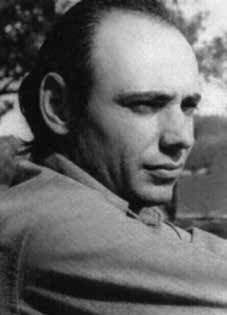

Jean
Henri
Raya
Ribard
CIRCUNSTÂNCIAS DA MORTE
Jean Henri Raya Ribard saiu de Buenos Aires entre os dias 14 e 16 de novembro de 1973, com destino ao Rio de Janeiro.
Segundo informações dos arquivos da Conadep, Jean Henri Raya Ribard viajou em um ônibus da empresa Pluma com Antonio Luciano Pregoni e Antonio Graciani. De acordo com a petição de habeas corpus de Jean Henri Raya às autoridades de segurança brasileiras feita por Lino Machado, a pedido de Gilberte e Mabel, Raya ingressou no Brasil pela cidade de Uruguaiana, no dia 18 de novembro de 1973, chegou a Porto Alegre de onde escreveu à sua esposa, Mabel Alicia Bernis de Raya.
Chegou no dia 21 do mesmo mês no Rio de Janeiro, antigo Estado da Guanabara, de onde se correspondeu novamente com Mabel e indicou o endereço em que se encontrava – Avenida Atlântica, nº 3150, apartamento 204, Copacabana. Desde então, Mabel Bernis não recebeu mais notícias de Raya.
Após não ter recebido nenhum contato em seu aniversário, em 3 de dezembro, Mabel Bernis começou as buscas por seu marido. Tal como expôs em audiência pública da Comissão Nacional da Verdade, no dia 11 de outubro de 2013, em São Paulo, Mabel recebeu uma ligação de um brasileiro que não se identificou e que, em um encontro, revelou que Jean, naquele momento, estava vivo e em uma prisão na Rua Barão de Mesquita no Rio de Janeiro.8
Assim, Mabel Bernis viajou com sua sogra, Gilberte Camille Ribard Raya Garcia, para o Rio de Janeiro, onde chegaram no dia 7 de setembro de 1974. Mabel contratou Lino Machado Filho, advogado conhecido de presos políticos, e ele solicitou informações às autoridades, mas não obteve êxito. Mabel decidiu entrar com o pedido de habeas corpus de Jean e, pouco tempo depois, regressou a Buenos Aires após sugestão de seu advogado que temia pela sua segurança.
De acordo com o pedido de habeas corpus, funcionários do prédio identificados no endereço da carta enviada do Rio de Janeiro reconheceram fotografias e confirmaram que Jean havia lá residido e de lá desaparecido. O pedido foi dirigido aos comandos do Exército, sendo destinado aos Comandos Regionais da Aeronáutica e da Marinha em todo o país, à Polícia Federal, às secretarias de Segurança Pública e aos DOPS nos estados e territórios.
O Supremo Tribunal Militar (STM) argumentou que não havia “indicação precisa da autoridade coatora”. Da mesma forma, o procurador-geral do Ministério Público da União na Justiça Militar, Ruy Lima Pessoa, em despacho ao relator do habeas corpus no STM, general Augusto Fragoso, insistiu na necessidade da indicação da autoridade coatora. Em resposta a outro despacho do general Augusto Fragoso, em que o STM solicitava novamente a indicação da autoridade coatora, Lino Machado afirmou que: “As prováveis autoridades coatoras serão as sediadas no Estado da Guanabara [hoje Rio de Janeiro] e as de São Paulo, já acostumadas a ‘sequestrar’ cidadão no Rio, como aconteceu recentemente com a advogada Dra. Flora, fato do conhecimento do Egrégio Tribunal. Quando do affaire Rubens Beyrodt Paiva, as negativas de prisão só sucumbiram quando o impetrante de ontem e de hoje ofereceu a prova da prisão negada sempre: o seu veículo no pátio do 1º Batalhão da Polícia do Exército, na Rua Barão de Mesquita. Mas já era tarde porque o paciente jamais apareceu. De resto, Eminente Ministro, a solução simplista recomendada pelo Ilustrado Dr. Procurador Geral, plena de conceitos jurídicos e filigranas desatende ao escopo do remédio heroico, que, por sê-lo assim, na lição de Ruy, não fica submetido a regras processuais que o ilidiriam, tornando-o inócuo e ineficaz.”
A família insistiu em descobrir o paradeiro de Jean, mas a investigação judicial não prosperou. Em 22 de novembro de 1974, o Ministério Público negou o pedido de habeas corpus e reafirmou que: “[…] Deve o impetrante dirigir-se ao órgão policial competente, encarregado de descobrir o paradeiro das pessoas desaparecidas no país”.
Documentos do Centro de Informações do Exterior (CIEX), do Ministério das Relações Exteriores, abertos à consulta pública pelo Arquivo Nacional no ano de 2012, lançaram luz sobre os desaparecimentos do francês Jean Henri Raya Ribard e do argentino Antonio Luciano Pregoni, ocorridos no Brasil no final de novembro de 1973, assim como sobre sua conexão com os sequestros dos brasileiros Joaquim Pires Cerveira e João Batista Rita, que tiveram lugar em Buenos Aires no dia 5 de dezembro do mesmo ano.
Há informações circunstanciais, que não puderam ser confirmadas pela CNV, de que o desaparecimento de Joaquim Pires Cerveira, João Batista Rita, Juan Raya e Antonio Pregoni estaria relacionado também ao desaparecimento, em 21 de novembro de 1973, em Copacabana, no Rio de Janeiro, de Caiupy Alves de Castro, que teria mantido contatos com Cerveira no ano de 1971, no Chile.
Em um despacho do STM de 25 de novembro de 1974, no qual se julga prejudicado o pedido de habeas corpus de Jean Henri Raya, o ministro-relator Augusto Fragoso afirma: “Esclarecia a petição que o paciente havia mantido, quando na Argentina, relação com brasileiros refugiados…”. Entretanto, não há qualquer menção na petição referente a algum brasileiro, seja ele refugiado ou não. Vários documentos indicam que Abraham Guillén e Alicia Eguren foram contatos comuns aos argentinos que desapareceram no Rio de Janeiro e aos brasileiros sequestrados em Buenos Aires.
Abraham Guillén, escritor e militante espanhol, foi combatente da Guerra Civil Espanhola (1936-1939) que se refugiou na França durante a Segunda Guerra Mundial. Em depoimento à CNV, Mabel Bernis confirma que Abraham Guillén e o pai de Jean haviam se conhecido na Guerra Civil Espanhola (1936-1939) e eram amigos. Mabel Bernis afirma que a influência de Guillén sobre seu marido é inquestionável. Guillén mudou-se para a América Latina nos anos 1950, e foi uma importante influência entre os Tupamaros e outros grupos insurgentes.
Documento do CISA de 18 de abril de 1967 expõe lista de pessoas envolvidas com os tupamaros do Uruguai, a qual inclui Abraham Guillén e Antonio Pregoni, entre outros. Segundo esse documento, Abraham Guillén é considerado um vínculo entre os guerrilheiros uruguaios e “o grupo Militar de asilados”, além de ser também contato de Leonel Brizola e Cândido Aragão, dentro outros asilados brasileiros. Em testemunho prestado à CNV, o cidadão argentino Julio Cesar Robles, militante da resistência peronista na década de 1960 e 1970, confirmou os encontros em Buenos Aires entre o grupo liderado pelo major Joaquim Pires Cerveira e o grupo de Juan Raya e Antonio Luciano Pregoni.
Segundo Julio Robles, o primeiro encontro ocorreu na confeitaria Richmond, na Rua Florida em Buenos Aires, poucas semanas após o golpe contra Salvador Allende no Chile. Robles também confirmou que Jean Raya, Antonio Pregoni e outro argentino conhecido pelo apelido de “El Salteño”, que acredita ser Antonio Graciani, viajaram ao Brasil em novembro de 1973, possivelmente na companhia de um dos brasileiros que integravam o grupo de Cerveira e também de outro cidadão de nacionalidade chilena.
No dossiê das atividades de Alberto Conrado Avegno – agente infiltrado do CIEX, há um documento de 2 de maio de 1974, no qual o agente recebeu a “incumbência e responsabilidade da dirigente revolucionária peronista de esquerda, Alicia Eguren”, para “apurar o que porventura pudesse ter ocorrido com os três argentinos que viajavam para o Brasil a meados de novembro de 1973” e que, até então, não haviam aparecido. O agente afirma, em seu relatório, que autoridades militares estiveram envolvidas na operação que levou aos desaparecimentos dos argentinos na Guanabara e dos brasileiros Joaquim Pires Cerveira e João Batista Rita em Buenos Aires.
Nesse mesmo arquivo do CIEX, encontra-se um documento secreto de 14 de dezembro de 1973, que também aponta o coronel Floriano Aguilar Chagas como envolvido nessa operação, a qual levou ao desaparecimento tanto do major Joaquim Pires Cerveira e João Batista Rita, sequestrados em Buenos Aires, como dos argentinos na Guanabara.
Jean Henri Raya Ribard left Buenos Aires between November 14th and 16th, 1973, heading to Rio de Janeiro.
According to information from Conadep archives, Jean Henri Raya Ribard traveled on a Pluma bus with Antonio Luciano Pregoni and Antonio Graciani. According to Jean Henri Raya's habeas corpus petition to the Brazilian security authorities made by Lino Machado, at the request of Gilberte and Mabel, Raya entered Brazil through the city of Uruguaiana, on November 18, 1973, arriving in Porto Alegre from where he wrote to his wife, Mabel Alicia Bernis de Raya.
He arrived on the 21st of the same month in Rio de Janeiro, formerly the State of Guanabara, where he corresponded again with Mabel and indicated the address where he was located – Avenida Atlântica, nº 3150, apartment 204, Copacabana. Since then, Mabel Bernis has not heard from Raya.
After receiving no contact on her birthday on December 3, Mabel Bernis began searching for her husband. As she explained at a public hearing of the National Truth Commission, on October 11, 2013, in São Paulo, Mabel received a call from a Brazilian who did not identify himself and who, in a meeting, revealed that Jean, at that moment, was alive and in a prison on Rua Barão de Mesquita in Rio de Janeiro.8
Thus, Mabel Bernis traveled with her mother-in-law, Gilberte Camille Ribard Raya Garcia, to Rio de Janeiro, where they arrived on September 7, 1974. Mabel hired Lino Machado Filho, a well-known lawyer for political prisoners, and he requested information from the authorities, but was unsuccessful. Mabel decided to file Jean's habeas corpus request and, shortly afterwards, returned to Buenos Aires following a suggestion from her lawyer who feared for her safety.
According to the habeas corpus request, employees of the building identified at the address of the letter sent from Rio de Janeiro recognized photographs and confirmed that Jean had lived there and disappeared from there. The request was addressed to the Army commands, and was intended for the Air Force and Navy Regional Commands across the country, the Federal Police, the Public Security secretariats and the DOPS in the states and territories.
The Supreme Military Court (STM) argued that there was no “precise indication of the coercive authority”. Likewise, the attorney general of the Federal Public Ministry in Military Justice, Ruy Lima Pessoa, in a dispatch to the habeas corpus rapporteur at the STM, General Augusto Fragoso, insisted on the need to indicate the coercive authority. In response to another order from General Augusto Fragoso, in which the STM once again requested the appointment of the coercive authority, Lino Machado stated that: "The probable coercive authorities will be those based in the State of Guanabara [today Rio de Janeiro] and those in São Paulo, already accustomed to 'kidnapping' citizens in Rio, as happened recently with the lawyer Dr. Flora, a fact known to the Egrégio Tribunal. In the case of the Rubens Beyrodt Paiva affair, the denials of arrest only succumbed when the petitioner of yesterday and today offered proof of the always denied arrest: his vehicle in the yard of the 1st Battalion of the Army Police, on Rua Barão de Mesquita. But it was already too late because the patient never appeared. Furthermore, Eminent Minister, the simplistic solution recommended by the Honorable Dr. Attorney General, full of legal concepts and filigrees, fails to meet the scope of the heroic remedy, which, as it is, in reality. Ruy’s lesson, it is not subject to procedural rules that would exempt it, making it harmless and ineffective.”
The family insisted on discovering Jean's whereabouts, but the judicial investigation was unsuccessful. On November 22, 1974, the Public Prosecutor's Office denied the request for habeas corpus and reaffirmed that: “[…] The petitioner must go to the competent police body, responsible for discovering the whereabouts of missing people in the country”.
Documents from the Foreign Information Center (CIEX), of the Ministry of Foreign Affairs, opened for public consultation by the National Archives in 2012, shed light on the disappearances of Frenchman Jean Henri Raya Ribard and Argentinean Antonio Luciano Pregoni, which occurred in Brazil at the end of November 1973, as well as on their connection with the kidnappings of Brazilians Joaquim Pires Cerveira and João Batista Rita, which took place in Buenos Aires on December 5th of the same year.
There is circumstantial information, which could not be confirmed by the CNV, that the disappearance of Joaquim Pires Cerveira, João Batista Rita, Juan Raya and Antonio Pregoni would also be related to the disappearance, on November 21, 1973, in Copacabana, Rio de Janeiro, of Caiupy Alves de Castro, who would have maintained contacts with Cerveira in 1971, in Chile.
In an STM order dated November 25, 1974, in which Jean Henri Raya's request for habeas corpus was judged to have been prejudiced, minister-rapporteur Augusto Fragoso states: “The petition clarified that the patient had maintained, when in Argentina, a relationship with Brazilian refugees…”. However, there is no mention in the petition regarding any Brazilian, whether refugee or not. Several documents indicate that Abraham Guillén and Alicia Eguren were common contacts with the Argentines who disappeared in Rio de Janeiro and the Brazilians kidnapped in Buenos Aires.
Abraham Guillén, Spanish writer and activist, was a combatant in the Spanish Civil War (1936-1939) who took refuge in France during the Second World War. In a statement to the CNV, Mabel Bernis confirms that Abraham Guillén and Jean's father had met during the Spanish Civil War (1936-1939) and were friends. Mabel Bernis states that Guillén's influence on her husband is unquestionable. Guillén moved to Latin America in the 1950s, and was an important influence among the Tupamaros and other insurgent groups.
CISA document dated April 18, 1967 sets out a list of people involved with the Tupamaros in Uruguay, which includes Abraham Guillén and Antonio Pregoni, among others. According to this document, Abraham Guillén is considered a link between the Uruguayan guerrillas and “the Military group of asylum seekers”, in addition to being also a contact for Leonel Brizola and Cândido Aragão, among other Brazilian asylum seekers. In testimony given to the CNV, Argentine citizen Julio Cesar Robles, a Peronist resistance activist in the 1960s and 1970s, confirmed the meetings in Buenos Aires between the group led by Major Joaquim Pires Cerveira and the group led by Juan Raya and Antonio Luciano Pregoni.
According to Julio Robles, the first meeting took place at the Richmond confectionery shop, on Rua Florida in Buenos Aires, a few weeks after the coup against Salvador Allende in Chile. Robles also confirmed that Jean Raya, Antonio Pregoni and another Argentine known by the nickname “El Salteño”, who he believes to be Antonio Graciani, traveled to Brazil in November 1973, possibly in the company of one of the Brazilians who were part of Cerveira's group and also another citizen of Chilean nationality.
In the dossier on the activities of Alberto Conrado Avegno – CIEX undercover agent, there is a document dated May 2, 1974, in which the agent received the “instruction and responsibility of the left-wing Peronist revolutionary leader, Alicia Eguren”, to “investigate what might have happened to the three Argentines who were traveling to Brazil in mid-November 1973” and who, until then, had not appeared. The agent states, in his report, that military authorities were involved in the operation that led to the disappearance of Argentines in Guanabara and Brazilians Joaquim Pires Cerveira and João Batista Rita in Buenos Aires.
In that same CIEX archive, there is a secret document from December 14, 1973, which also names Colonel Floriano Aguilar Chagas as being involved in this operation, which led to the disappearance of both Major Joaquim Pires Cerveira and João Batista Rita, kidnapped in Buenos Aires, and the Argentines in Guanabara.
Jean Henri Raya Ribard salió de Buenos Aires entre el 14 y el 16 de noviembre de 1973 rumbo a Río de Janeiro.
Según información de los archivos de la Conadep, Jean Henri Raya Ribard viajaba en un bus Pluma junto a Antonio Luciano Pregoni y Antonio Graciani. Según la petición de hábeas corpus de Jean Henri Raya a las autoridades de seguridad brasileñas realizada por Lino Machado, a pedido de Gilberte y Mabel, Raya ingresó a Brasil por la ciudad de Uruguaiana, el 18 de noviembre de 1973, llegando a Porto Alegre desde donde escribió a su esposa, Mabel Alicia Bernis de Raya.
Llegó el 21 del mismo mes a Río de Janeiro, antiguo Estado de Guanabara, donde mantuvo correspondencia nuevamente con Mabel y le indicó la dirección donde se encontraba – Avenida Atlântica, nº 3150, apartamento 204, Copacabana. Desde entonces, Mabel Bernis no sabe nada de Raya.
Después de no recibir ningún contacto el día de su cumpleaños el 3 de diciembre, Mabel Bernis comenzó a buscar a su marido. Como explicó en una audiencia pública de la Comisión Nacional de la Verdad, el 11 de octubre de 2013, en São Paulo, Mabel recibió una llamada de un brasileño que no se identificó y quien, en una reunión, reveló que Jean, en ese momento, estaba vivo y en una prisión en la Rua Barão de Mesquita, en Río de Janeiro.8
Así, Mabel Bernis viajó con su suegra, Gilberte Camille Ribard Raya García, a Río de Janeiro, donde llegaron el 7 de septiembre de 1974. Mabel contrató a Lino Machado Filho, un conocido abogado de presos políticos, y este solicitó información a las autoridades, pero no tuvo éxito. Mabel decidió interponer el recurso de hábeas corpus de Jean y, poco después, regresó a Buenos Aires por sugerencia de su abogado que temía por su seguridad.
Según el pedido de hábeas corpus, empleados del edificio identificados en la dirección de la carta enviada desde Río de Janeiro reconocieron fotografías y confirmaron que Jean había vivido allí y desaparecido de allí. La solicitud estaba dirigida a los comandos del Ejército, y estaba destinada a los Comandos Regionales de la Fuerza Aérea y la Armada de todo el país, la Policía Federal, las secretarías de Seguridad Pública y los DOPS de los estados y territorios.
El Tribunal Supremo Militar (STM) argumentó que no había “indicios precisos de la autoridad coercitiva”. Asimismo, el fiscal general del Ministerio Público Federal en Justicia Militar, Ruy Lima Pessoa, en despacho al relator de hábeas corpus del STM, general Augusto Fragoso, insistió en la necesidad de señalar la autoridad coercitiva. En respuesta a otra orden del general Augusto Fragoso, en la que el STM solicitó nuevamente el nombramiento de la autoridad coercitiva, Lino Machado afirmó que: "Las probables autoridades coercitivas serán las radicadas en el Estado de Guanabara [hoy Río de Janeiro] y las de São Paulo, ya acostumbradas a 'secuestro' de ciudadanos en Río, como sucedió recientemente con el abogado Dr. Flora, hecho conocido por el Tribunal Egrégio. En el caso de Rubens En el caso Beyrodt Paiva, las negativas de detención sólo sucumbieron cuando el peticionario de ayer y de hoy presentó la prueba de la detención siempre negada: su vehículo en el patio del 1.er Batallón de la Policía Militar, en la calle Barão de Mesquita. Pero ya era demasiado tarde porque el paciente nunca apareció. Además, Eminente Ministro, la solución simplista recomendada por el Honorable Dr. Fiscal General, llena de conceptos jurídicos y filigranas, no alcanza el alcance de lo heroico. recurso, que, como es en realidad la lección de Ruy, no está sujeto a reglas procesales que lo eximirían, haciéndolo inofensivo e ineficaz”.
La familia insistió en descubrir el paradero de Jean, pero la investigación judicial no tuvo éxito. El 22 de noviembre de 1974 el Ministerio Público negó la solicitud de hábeas corpus y reafirmó que: “[…] El peticionario deberá acudir al cuerpo policial competente, encargado de descubrir el paradero de las personas desaparecidas en el país”.
Documentos del Centro de Información Exterior (CIEX), del Ministerio de Relaciones Exteriores, abiertos a consulta pública por el Archivo Nacional en 2012, arrojan luz sobre las desapariciones del francés Jean Henri Raya Ribard y del argentino Antonio Luciano Pregoni, ocurridas en Brasil a fines de noviembre de 1973, así como sobre su conexión con los secuestros de los brasileños Joaquim Pires Cerveira y João Batista Rita, ocurridos en Buenos Aires en diciembre. 5 del mismo año.
Hay información circunstancial, que no pudo ser confirmada por la CNV, de que la desaparición de Joaquim Pires Cerveira, João Batista Rita, Juan Raya y Antonio Pregoni también estaría relacionada con la desaparición, el 21 de noviembre de 1973, en Copacabana, Río de Janeiro, de Caiupy Alves de Castro, quien habría mantenido contactos con Cerveira en 1971, en Chile.
En auto del STM de 25 de noviembre de 1974, en el que se juzgó perjudicada la solicitud de hábeas corpus presentada por Jean Henri Raya, el ministro relator Augusto Fragoso afirma: “La petición aclaraba que el paciente había mantenido, cuando estuvo en Argentina, una relación con refugiados brasileños…”. Sin embargo, en la petición no se menciona a ningún brasileño, sea refugiado o no. Varios documentos indican que Abraham Guillén y Alicia Eguren fueron contactos comunes con los argentinos desaparecidos en Río de Janeiro y los brasileños secuestrados en Buenos Aires.
Abraham Guillén, escritor y activista español, fue un combatiente de la Guerra Civil Española (1936-1939) que se refugió en Francia durante la Segunda Guerra Mundial. En declaraciones a la CNV, Mabel Bernis confirma que Abraham Guillén y el padre de Jean se habían conocido durante la Guerra Civil Española (1936-1939) y eran amigos. Mabel Bernis afirma que la influencia de Guillén sobre su marido es incuestionable. Guillén se mudó a América Latina en la década de 1950 y tuvo una influencia importante entre los Tupamaros y otros grupos insurgentes.
Documento de CISA del 18 de abril de 1967 establece una lista de personas involucradas con los Tupamaros en Uruguay, que incluye a Abraham Guillén y Antonio Pregoni, entre otros. Según ese documento, Abraham Guillén es considerado un vínculo entre la guerrilla uruguaya y “el grupo Militar de solicitantes de asilo”, además de ser también contacto de Leonel Brizola y Cândido Aragão, entre otros solicitantes de asilo brasileños. En testimonio prestado ante la CNV, el ciudadano argentino Julio César Robles, activista de la resistencia peronista en los años 1960 y 1970, confirmó las reuniones en Buenos Aires entre el grupo liderado por el mayor Joaquim Pires Cerveira y el grupo liderado por Juan Raya y Antonio Luciano Pregoni.
Según Julio Robles, el primer encuentro tuvo lugar en la confitería Richmond, en la Rua Florida de Buenos Aires, pocas semanas después del golpe de Estado contra Salvador Allende en Chile. Robles también confirmó que Jean Raya, Antonio Pregoni y otro argentino conocido con el sobrenombre de “El Salteño”, que cree ser Antonio Graciani, viajaron a Brasil en noviembre de 1973, posiblemente en compañía de uno de los brasileños que formaban parte del grupo de Cerveira y también otro ciudadano de nacionalidad chilena.
En el expediente sobre las actividades de Alberto Conrado Avegno – agente encubierto del CIEX, consta un documento fechado el 2 de mayo de 1974, en el que el agente recibió la “instrucción y responsabilidad de la líder revolucionaria peronista de izquierda, Alicia Eguren”, de “investigar qué pudo haber sucedido con los tres argentinos que viajaban a Brasil a mediados de noviembre de 1973” y que, hasta ese momento, no habían comparecido. El agente afirma, en su informe, que autoridades militares estuvieron involucradas en el operativo que llevó a la desaparición de los argentinos en Guanabara y de los brasileños Joaquim Pires Cerveira y João Batista Rita en Buenos Aires.
En ese mismo archivo del CIEX existe un documento secreto del 14 de diciembre de 1973, que también señala al coronel Floriano Aguilar Chagas como involucrado en esta operación, que provocó la desaparición tanto del mayor Joaquim Pires Cerveira como de João Batista Rita, secuestrados en Buenos Aires, y de los argentinos en Guanabara.